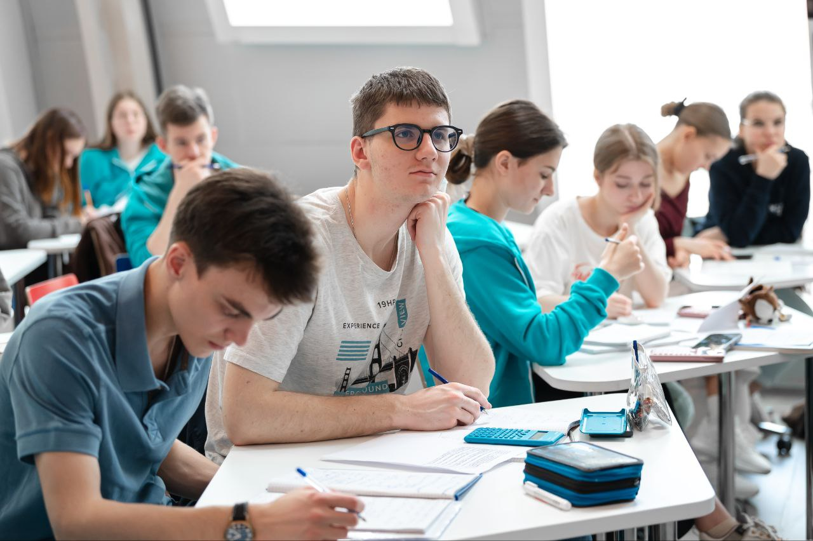

Обо мне
Я, Бортулев Александр Сергеевич, родился 15 марта 2008 года. Вырос в интеллигентной семье врачей и с ранних лет питаю неугасимый интерес к естественно‑научным дисциплинам: химии, физике, математике и информатике. Обучаюсь в ГБОУ лицее № 281 Адмиралтейского района Санкт‑Петербурга, где с энтузиазмом развиваю свои таланты и достигаю высоких результатов.
🥇
Золотая медаль I степени
11+
Олимпиадных наград
18+
Курсов Образовательного центра «Сириус»
100%
Аттестат с отличием
Среднее общее образование:
- Удостоен награды Правительства Санкт-Петербурга — почетного знака «За особые успехи в обучении»
- Награжден благодарственным письмом "За высокие достижения в области дополнительного образования, стремление и упорство в достижении целей и успешное выступление на конкурсах в 2024–2025 учебном году" (От временно исполняющего обязанности главы администрации Адмиралтейского района Санкт-Петербурга)
- Награжден медалью «ЗА ОСОБЫЕ УСПЕХИ В УЧЕНИИ» I степени (золотая медаль)
- Получил аттестат о среднем общем образовании с отличием (красного цвета)
- Получил благодарность за отличные успехи в учебе, целеустремлённость в достижении поставленных целей, активное участие в делах школы и класса, ответственное творческое отношение ко всем делам, за помощь и поддержку классному руководителю (От главы Муниципального образования, исполняющего полномочия председателя Муниципального Совета).
Олимпийские и конкурсные достижения:
- Победитель Всероссийского IT‑раунда.
- Победитель регионального конкурса «Лабиринты науки» по информатике.
- Призёр региональной олимпиады «Биопрактикум» по биологии.
- Победитель соревнования по программированию «Битва алгоритмов».
- Призёр II степени перечневой олимпиады «Бельчонок» по химии.
- Призёр регионального этапа Всероссийской олимпиады школьников по химии.
- Призёр перечневой олимпиады «Открытая олимпиада школьников» по химии.
- Призёр перечневой олимпиады «Гранит науки» по химии (9 класс).
- Абсолютный победитель олимпиады «Гранит науки» по химии (10 класс).
- Призёр перечневой олимпиады «Гранит науки» по химии (11 класс).
- Призер открытых состязаний «Фундамент будущего – ЗФТШ» по химии (олимпиада ЗФТШ при МФТИ)
Школа при МФТИ (ЗФТШ):
- Окончил 10 класс с отличием по информатике, химии, физике и биологии.
- Окончил 9 класс с отличием по химии и биологии.
- Окончил 11 класс с отличием по физике, математике, химии.
- Призер открытых состязаний «Фундамент будущего – ЗФТШ» по химии (олимпиада ЗФТШ при МФТИ)
Образовательные практики и научные стажировки:
- Проходил обучение в различных научных лабораториях, постигая методики современного эксперимента.
- Участник профильной смены по химии в Образовательном центре «Сириус».
- Успешно прошёл курс «Инфохимия для старшеклассников» университета ИТМО.
- Принял участие в «Летней практике школьников по физике» при университете ИТМО.
- Прошел обучение по дополнительной общеразвивающей программе в формате интенсивной профильной образовательной программы «Зимний интенсив по химии» от Академии талантов, Центра олимпиад, Санкт-Петербургского государственного университета и Российского государственного педагогического университета имени А.И. Герцена
Профильные курсы Образовательного центра «Сириус»:
- Курс «Химия. Апрель 2025. 10 класс». С отличием окончил курс, стал победителем конкурса «Задачный практикум»
- Курс «Линейная алгебра»
- Курс «Спецкурс. Промышленный органический синтез. 10–11 классы»
- Курс «Теория вероятностей и математическая статистика»
- Курс «Математический анализ»
- Курс «Дополнительные главы химии. 8 класс»
- Курс «Дополнительные главы биологии. 7 класс»
- Курс «Дополнительные главы биологии. 8 класс»
- Курс «Спецкурс. Химия комплексных соединений. 10–11 классы»
- Курс «Спецкурс. Спектроскопия ЯМР. 10–11 классы»
- Курс «Дополнительные главы химии. 9 класс»
- Курс «Дополнительные главы химии. 10 класс»
- Курс «Дополнительные главы химии. 11 класс»
- Курс «Дополнительные главы биологии: биохимия. 10 класс»
- Курс «Введение в программирование на языке C++»
- Курс «Введение в программирование на языке Python»
- Курс «Анализ данных на Python»
- Профильный модуль апрельской программы по химии (122 академических часа)
Онлайн‑курсы и программы дополнительного образования:
- Прошел курс с отличием на английском языке "Продвинутая химия: аналитическая химия и органический синтез" ("Advanced Chemistry: Analytical Chemistry and Organic Synthesis")
- Прошел курс с отличием на английском языке "Металлы в медицине, их влияние на здоровье человека" ("Metals in medicine, their impact on human health") на платформе OpenLearn от Открытого университета
- Прошел курс с отличием на английском языке "Промежуточная химия: азот, переходные элементы и комплексы металлов" ("Nitrogen, Transition Elements and Metal Complexes")
- Успешно окончил онлайн-курс ««Основы общей химии»», организованный Международным благотворительным фондом поддержки математики имени Леонарда Эйлера в рамках социально-педагогической программы «Формула Единства» при поддержке Фонда Президентских грантов
- Успешно окончил онлайн-курс ««Комбинаторика и теория вероятностей»», организованный Международным благотворительным фондом поддержки математики имени Леонарда Эйлера в рамках социально-педагогической программы «Формула Единства» при поддержке Фонда Президентских грантов
- Успешно окончил онлайн-курс «Теория чисел», организованный Международным благотворительным фондом поддержки математики имени Леонарда Эйлера в рамках социально-педагогической программы «Формула Единства» при поддержке Фонда Президентских грантов
- «Комбинаторика и теория вероятностей» на платформе «Формула Единства».
- «Создание сайтов. Front‑end разработка» на платформе Hello World.
- «Инфохимия для старшеклассников» (очная смена, ИТМО).
- «Летняя практика школьников по физике» (очная смена, ИТМО).
- Прошел обучение по дополнительной общеразвивающей программе в формате интенсивной профильной образовательной программы «Зимний интенсив по химии» от Академии талантов, Центра олимпиад, Санкт-Петербургского государственного университета и Российского государственного педагогического университета имени А.И. Герцена
Дополнительный курс:
- «Курс Дополнительные главы физики: геометрическая оптика. 8 класс».
Каждое упомянутое достижение и завершённый курс отражает мою неугасимую тягу к знаниям, стремление к совершенству и готовность преодолевать самые смелые научные и технические вызовы.